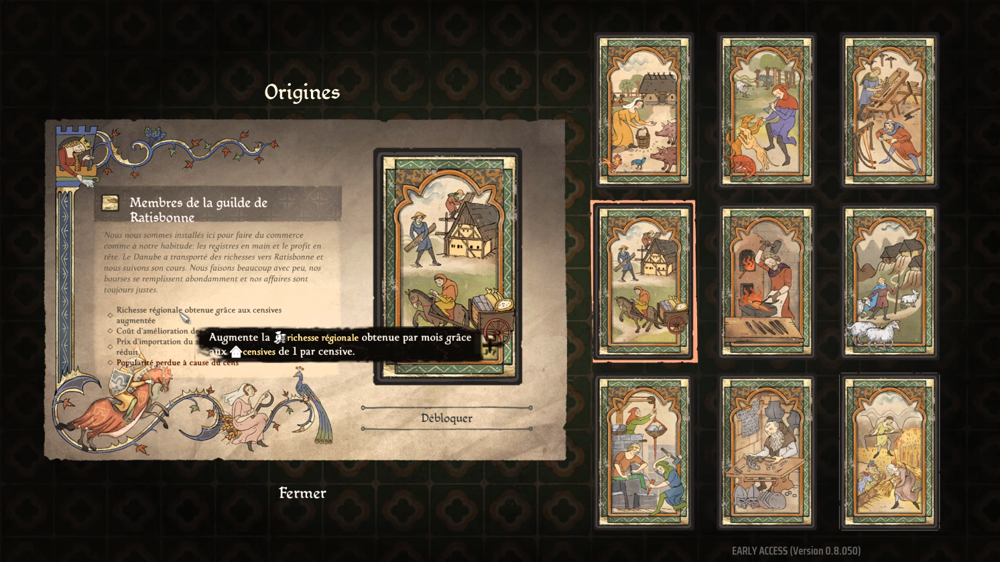

Résumé : Ce guide Manor Lords explique comment bien débuter, éviter la famine, optimiser votre économie et survivre aux premières saisons dans ce city-builder médiéval exigeant.
Votre village ne survit pas aux premières saisons ou à l'hiver ? Découvrez les stratégies indispensables en français pour faire prospérer votre village.
Manor Lords nous plonge à la fin du XIVe siècle en Franconie. Mais au fait, qu’est-ce que la Franconie ?
C’est une région historique bien réelle située dans le sud de l'Allemagne, qui correspond aujourd'hui à la partie nord de la Bavière. Dans le jeu, on retrouve d'ailleurs toute l'architecture typique de cette région, comme les magnifiques maisons à colombages, les châteaux et les églises médiévales.
Pour bien comprendre le gameplay, il faut retenir deux piliers de cette époque :
Derrière le succès phénoménal de Manor Lords, il n'y a pas un studio aux millions de dollars, mais un exploit presque solo. Pendant des années, le jeu a été développé par une seule personne : Grzegorz Styczeń, un développeur indépendant polonais créateur du studio Slavic Magic.
Aujourd'hui, même si Slavic Magic s'est entouré de quelques renforts pour déployer les mises à jour majeures, véritables refontes (comme le système de maintenance ou les arbres de Perks), le jeu conserve cette âme de projet passionné. C'est précisément ce développement unique, très à l'écoute de la communauté, qui fait de ce city-builder une véritable pépite.
Manor Lords est un city-builder médiéval exigeant où la logistique et le bonheur de vos villageois dictent votre réussite. Pour vous éviter la famine dès la première année, j'ai condensé les mécaniques fondamentales du jeu.
L'ordre de construction est crucial. Apprenez à placer stratégiquement vos premières censives, votre camp de bûcherons et votre grenier pour protéger vos ressources des intempéries. Évitez les sans-logis, car cela fait baisser la popularité du village et bloque l'immigration. De plus, la pluie peut détruire votre stock de pain s'il n'est pas protégé.
Le jeu évolue régulièrement. Ce guide prend pleinement en compte les dernières mises à jour du gameplay, notamment le système de maintenance et l'attribution des points de développement (perks) essentiels pour débloquer les mécaniques de commerce ou d'agriculture avancée.

Comprenez comment assigner efficacement vos villageois et optimiser la construction de vos censives (les extensions de potagers, de poulaillers ou d'artisans) pour générer une économie stable et une armée solide.
Vérifiez que vous avez des familles assignées au Grenier. Ce sont elles qui transportent la nourriture jusqu'aux étals du marché, et non les chasseurs ou cueilleurs directement.
Pour attirer de nouveaux arrivants, votre taux d'approbation globale doit être supérieur à 50%. Assurez-vous qu'ils aient un toit, de la variété de nourriture et du bois de chauffage.
Accédez à mon guide de 5 minutes écrit avec toutes les captures d'écran, schémas de production et détails des points de perks.
Ouvrir l'article complet →Retrouvez mes tests vidéo, analyses de gameplay et tutoriels visuels pas à pas pour ne rater aucun detail du jeu.
Voir mes vidéos →